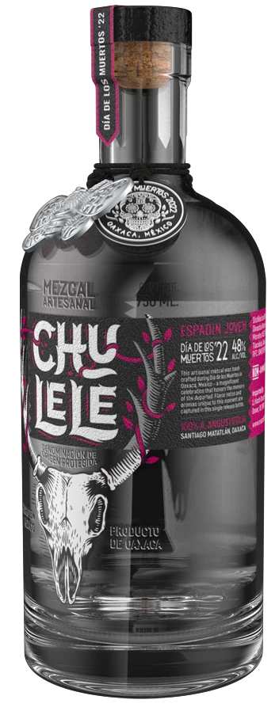

About 150 espadín agave, cut by hand in Santiago Matatlán.
A pit oven, volcanic stone, four days.
The tahona, a horse called Isabella, seven wild days.
Two distillations, above 53% ABV off the still.
Marigold and cockscomb on every altar. The dead are the guests of honor.
Set apart in the barrel. It has not left it since.